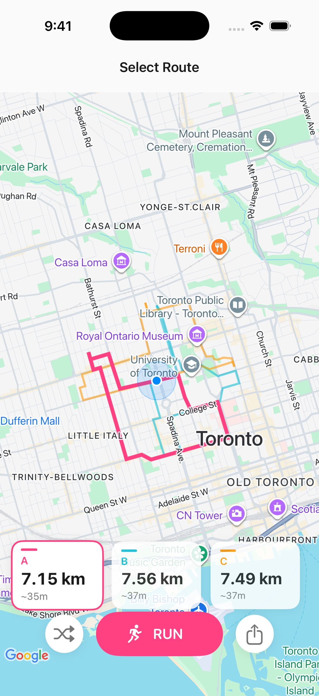
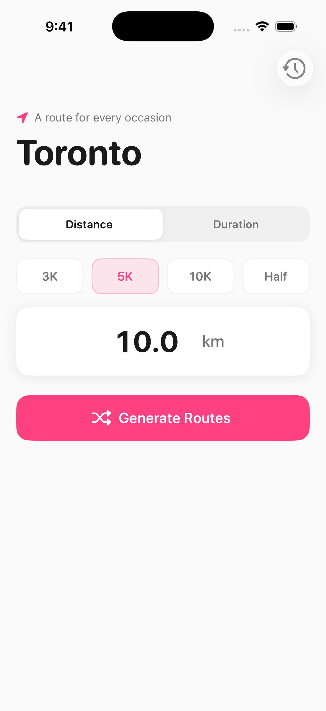
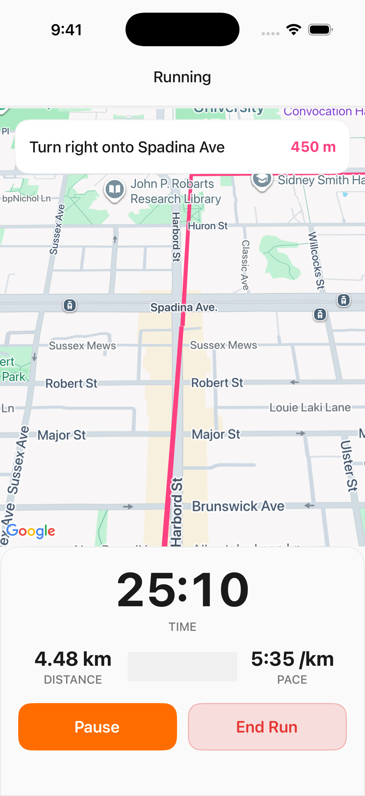
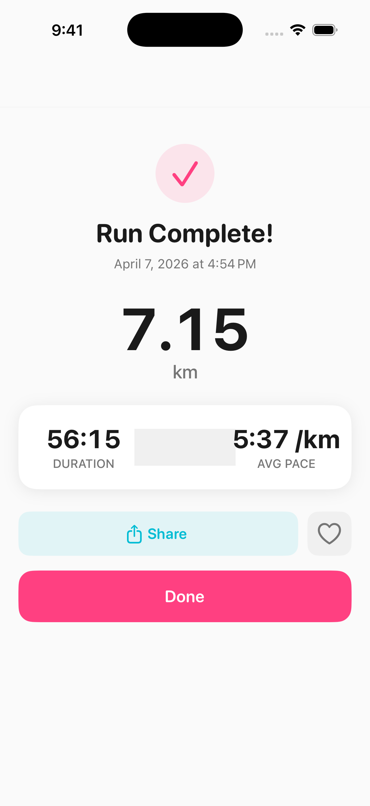
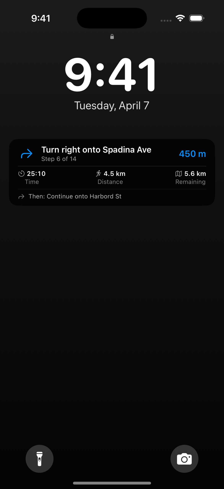
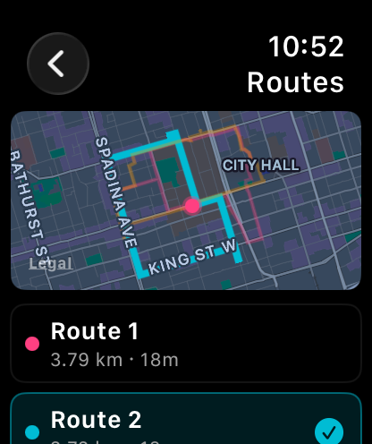

Pick a distance or a time. Get three routes you've never run. Every one starts and ends where you're standing.
Download on the App Store
Every run is a new route. No repeats, no history, no algorithm deciding what you "usually" do.
Pick a distance. Or a time. Three routes you've never run, each starting where you stand. Tap one. Go.
Turn-by-turn directions on your phone — or on your wrist, with no phone needed at all.
Finish the run. It's already on Strava. Off by default — one tap to turn it off again.
Connect Apple Health and routes match your actual pace. "30 minutes" means 30 minutes for you.

5 km, 30 minutes — whatever fits your day.
Pick the one that catches your eye — or hit "3 more."

Eyes up, feet moving.

Time, distance, pace — everything you need.

Track your run from the Lock Screen.

Random Run is a standalone Apple Watch app — not a mirror of your phone. Generate a route, follow it turn by turn, and track the whole run from 40mm of glass.
The phone can stay at home. Most of the time, it does.
Works standalone on Apple Watch Series 6 and later. Falls back to your phone whenever you'd rather.
Turn on Strava once. Every run after that is there before you catch your breath — from your wrist or from your phone.
Off by default. One tap to turn off again. Nothing leaves your phone unless you say so.
Your runs, your call. Strava integration is fully optional and disabled on first launch.
Connect Strava once. Every run uploads automatically. Finish the run, skip the sharing dance.
No account. No tracking. No ads.
Your location never leaves your phone. Open the app and go.
Turn-by-turn voice guidance is here on iPhone and Apple Watch. Keep your head up, your hands free, and your headphones in.
Connect Strava once and every finished run uploads automatically. No tapping, no sharing dance — still private by default.
Clean Sprint is here — bright surfaces, coral accents, and a design built around getting you out the door faster.
Yes — completely free. No subscriptions, no in-app purchases, no ads. Every feature is available from day one.
Yes. Random Run is a standalone Apple Watch app — not a companion that mirrors the phone. You can generate routes, follow turn-by-turn directions, and track the whole run from your wrist. Leave the phone at home.
Yes. Random Run has optional Strava integration on both iPhone and Apple Watch. It's off by default — turn it on once and every future run uploads automatically when you finish. One tap to turn it off again, any time.
No. Your location stays on your device and is never sent to our servers. Route generation happens locally. There are no analytics SDKs, no accounts, and no tracking of any kind. Strava integration is fully optional and off by default.
Not yet — Random Run is iOS only for now. If you'd like to see an Android version, let us know. It helps us prioritize.
Tell Random Run how far or how long you want to run. It generates three unique loop routes starting and ending at your current location. If you connect Apple Health, routes are personalized to your running pace.
Yes. Connect Strava once in Settings and every finished run uploads automatically — no taps required. Your phone sends runs directly to Strava; we never see them. Disconnect anytime from Settings or from Strava's own app-permissions page.
iOS only for now. If you're on Android, let us know you're out there — it helps us prioritize what comes next.